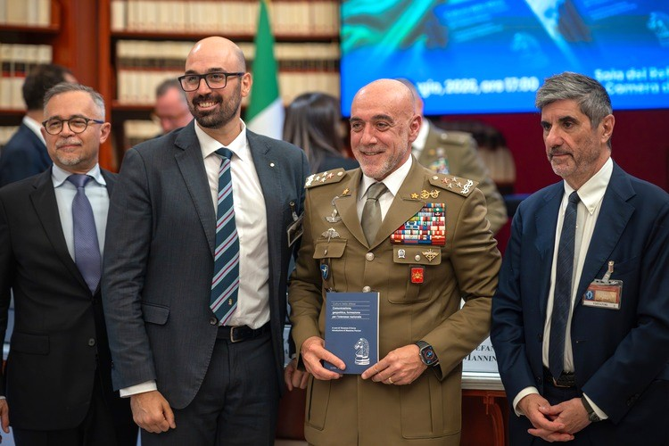
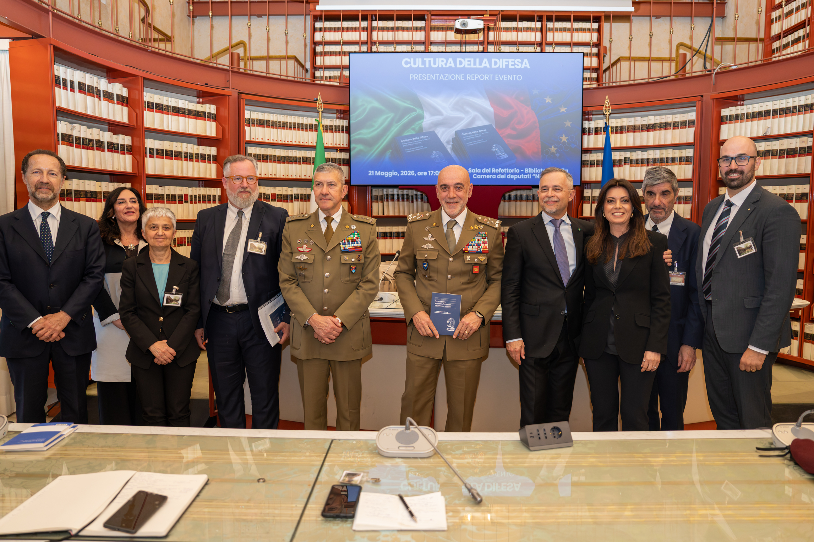
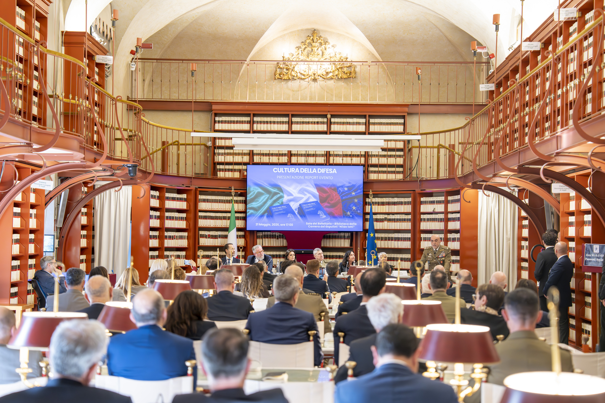
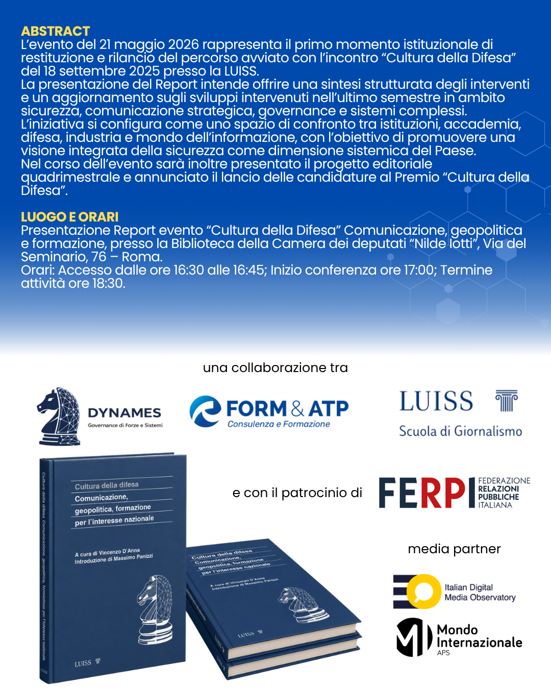

DYNAMES
DYNAMESCultura della Difesa
Comunicazione, geopolitica e formazione per l’interesse nazionale. Il resoconto della presentazione del Report presso la Biblioteca della Camera dei deputati “Nilde Iotti”.
Rivedi l’evento
La registrazione integrale della presentazione del Report “Cultura della Difesa” è disponibile sul canale YouTube del progetto.

Galleria fotografica
Alcuni momenti della presentazione del Report “Cultura della Difesa”, svoltasi presso la Biblioteca della Camera dei deputati “Nilde Iotti”.
.jpg)
.jpg)
.jpg)


.jpg)
.jpg)
.jpg)
.jpg)

.jpg)
.jpg)
.jpg)

.jpg)
.jpg)
.jpg)
.jpg)
.jpg)
Resoconto dell’iniziativa
La presentazione del Report “Cultura della Difesa” si è svolta il 21 maggio 2026 presso la Biblioteca della Camera dei deputati “Nilde Iotti”, ospiti del Vicepresidente On. Giorgio Mulé. L’iniziativa ha rappresentato il primo momento istituzionale di lancio del progetto avviato con l’incontro “Cultura della Difesa” del 18 settembre 2025 presso la LUISS.
Nel corso dell’evento è stata proposta una sintesi strutturata del percorso sviluppato attorno ai temi della sicurezza, della comunicazione strategica, della governance e dei sistemi complessi, con un aggiornamento sugli sviluppi intervenuti nell’ultimo semestre.
Il confronto ha riunito istituzioni, accademia, Difesa, industria e mondo dell’informazione, confermando l’esigenza di promuovere una visione integrata della sicurezza come dimensione sistemica del Paese.
Durante la giornata sono stati inoltre presentati il progetto editoriale quadrimestrale e il lancio delle candidature al Premio “Cultura della Difesa”.
Obiettivo dell’evento: consolidare il percorso “Cultura della Difesa” come piattaforma stabile di analisi, produzione culturale e confronto tra stakeholder, valorizzando sicurezza, difesa, formazione e interesse nazionale come dimensioni centrali della resilienza democratica e della coesione del Paese.
Audience
All’iniziativa hanno preso parte rappresentanti istituzionali, policy maker, vertici della Difesa, accademici, industria, stakeholder, comunicatori e giornalisti.
Punti emersi dal confronto
Cultura della difesa come responsabilità diffusa
Il confronto ha chiarito che la difesa non riguarda solo lo strumento militare, ma il vivere quotidiano del Paese: infrastrutture, sicurezza, filiere, informazione, scuola, industria e cittadini.
Consapevolezza pubblica e linguaggio comune
È emersa la necessità di rendere comprensibili temi complessi senza banalizzarli, superando stereotipi e formule ambigue e rafforzando il ruolo di media, comunicatori e corpi intermedi.
Pensiero critico e resilienza cognitiva
La difesa delle menti è stata indicata come una delle nuove frontiere della sicurezza: contro sovrainformazione, guerra cognitiva e minacce ibride, l’antidoto principale resta il pensiero critico.
Formazione per decidere nella complessità
La formazione della classe dirigente richiede approcci multidisciplinari, contaminazione tra ecosistemi diversi, capacità di comprendere scenari instabili e decisioni rapide fondate su visione strategica.
Tecnologia, industria e sovranità
Droni, intelligenza artificiale, procurement, scalabilità industriale e aggiornabilità delle piattaforme richiedono cooperazione selettiva, competenze adeguate e tutela degli interessi nazionali.
Pace, deterrenza e valori democratici
La pace non è più percepita come un dato acquisito: il confronto ha richiamato il legame tra deterrenza, preparazione, valori, coesione nazionale e Forze Armate come bene dell’intera comunità.
Tavola rotonda
Saluto istituzionale
- On. Giorgio Mulè — Vicepresidente della Camera dei deputati.
Introduzione
- Gianni Riotta — Direttore LUISS Scuola di Giornalismo e membro del Comitato “Cultura della Difesa”.
Presentazione del progetto
- Gen. C.A. Massimo Panizzi — Formatore, autore e consulente strategico FORM&ATP.
- Vincenzo D’Anna e Fabio Boscacci — Co-fondatori DYNAMES. Presentazione del percorso editoriale “Cultura della Difesa” e del Premio “Cultura della Difesa”, con apertura ufficiale delle candidature.
Moderazione
- Tonia Cartolano — Giornalista Sky TG24.
Interventi
- Prof.ssa Elena Baralis — Prorettore Politecnico di Torino. Tema: formazione dei futuri professionisti e leader nei sistemi complessi, tra competenze tecnologiche, innovazione e responsabilità strategica.
- Dott.ssa Luisa Riccardi — Vicario della Direzione Nazionale Armamenti. Tema: politica industriale della difesa, capacità tecnologiche e produttive e resilienza del sistema Paese.
- Prof. Maurizio Caprara — Editorialista e docente LUISS. Tema: il divario tra realtà strategica e percezione pubblica della difesa e il ruolo dei media nella costruzione della consapevolezza nazionale.
- Dott. Stefano Toncich — VP HR Italy, MBDA. Tema: attrattività del settore, ricerca dei talenti, formazione continua e competenze trasversali.
- Gen. C.A. Stefano Mannino — Presidente CASD. Tema: dalla complessità dello scenario alla formazione della classe dirigente per le nuove sfide.
Conclusioni
- Gen. C.A. Carmine Masiello — Capo di Stato Maggiore dell’Esercito.
Il progetto “Cultura della Difesa”
Il progetto “Cultura della Difesa” nasce da un percorso condiviso promosso da LUISS – Scuola di Giornalismo, Form&ATP e DYNAMES, con l’obiettivo di sviluppare una riflessione strutturata e continuativa sui temi della difesa e sicurezza, della governance e della resilienza del sistema Paese.
Il punto di origine del progetto è rappresentato dall’evento “Cultura della Difesa: Comunicazione, Geopolitica e Formazione per l’Interesse Nazionale”, svoltosi il 18 settembre 2025 presso la LUISS. L’iniziativa ha visto la partecipazione di rappresentanti istituzionali, vertici della Difesa, accademici, industria e mondo della comunicazione, generando un confronto di elevato livello qualitativo e registrando una significativa partecipazione.
L’esperienza ha evidenziato la necessità di un approccio interdisciplinare ai temi della sicurezza, la qualità e profondità delle analisi espresse dai relatori e l’esistenza di una domanda crescente di strumenti di lettura e interpretazione dei fenomeni complessi contemporanei.
Da tale esperienza è emersa con chiarezza l’esigenza di trasformare un evento di successo in un progetto strutturato, stabile e continuativo.
Una piattaforma stabile di analisi e relazione
A partire da questo presupposto, i partner promotori hanno inteso dare vita a un’iniziativa più ampia, concepita come piattaforma di analisi, produzione culturale e relazione tra stakeholder.
Il progetto si fonda su un’idea chiave: la difesa non è più un ambito settoriale o esclusivamente militare, ma una dimensione sistemica che coinvolge l’intera sfera nazionale. In questo quadro, la “Cultura della Difesa” viene interpretata come un insieme di conoscenze condivise, una responsabilità diffusa tra istituzioni, imprese e cittadini e una condizione essenziale per la stabilità, lo sviluppo e la coesione del Paese.
Anteprima del progetto
Sfoglia la presentazione del progetto “Cultura della Difesa”, con le direttrici editoriali, il quadrimestrale, il Premio e la timeline delle prossime iniziative.
Le direttrici del progetto
Report “Cultura della Difesa”
Realizzato con LUISS Press, raccoglie gli interventi dell’evento del settembre 2025 e li integra con ulteriori approfondimenti analitici. È il primo prodotto strutturato del progetto e uno strumento di riferimento per decisori, formatori e stakeholder.
Periodico quadrimestrale
Uno spazio stabile di analisi e divulgazione per approfondire sicurezza, difesa e governance dei sistemi complessi, favorendo chiavi di lettura multidisciplinari e dialogo tra ambiti istituzionali, accademici, industriali e comunicativi.
Premio “Cultura della Difesa”
Riconoscimento annuale finalizzato a valorizzare esperienze e contributi di eccellenza in cultura istituzionale, innovazione e tecnologia, educazione e formazione, comunicazione strategica, corpi intermedi e cittadinanza attiva.
Promotori e sviluppo
Progetto promosso da: LUISS – Scuola di Giornalismo, Form&ATP e DYNAMES.
Evento ospitato da: Vicepresidente della Camera dei deputati On. Giorgio Mulé, presso la Biblioteca della Camera dei deputati “Nilde Iotti”.
Finalità: promuovere la difesa come valore civico e strategico condiviso, contribuendo alla diffusione di una cultura della difesa consapevole e moderna.
Locandine dell’evento

